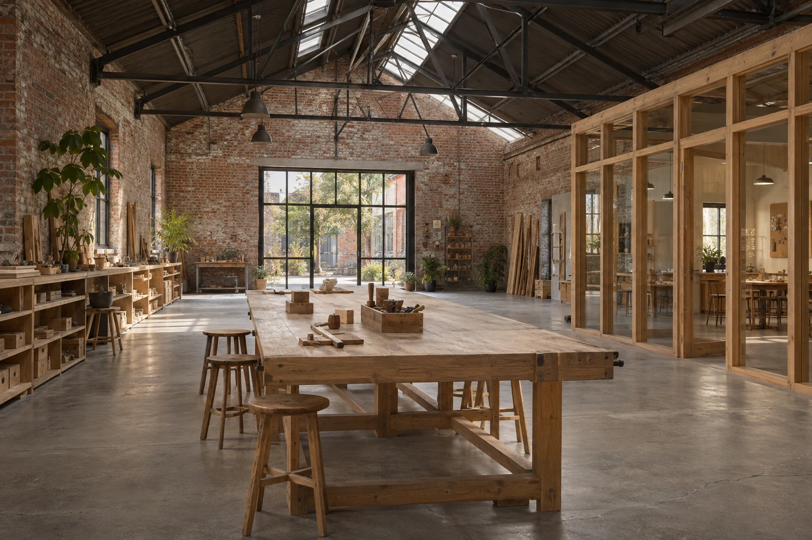

Community interiors / Odense / 2023
Brick Workshop
A place to make things, together.

- Place
- Odense, Denmark
- Design year
- 2023
- Illustrative area
- 360 m²
- Approach
- Adaptive reuse
- Status
- Fictional design study
The starting question
A place to make things, together.
A local making group needed a common workroom, space for teaching and a place to leave materials. The study adapts a repair hall around those three needs, giving each a clear place without treating them as separate buildings.
The broad hall, brick walls and exposed roof trusses offer a useful starting point. Storage, conversation and teaching need to fit inside that open structure.
Put shared work at the centre
A long communal table gives the main hall a clear purpose and keeps everyday making visible.
Let teaching remain connected
A glazed room provides a quieter setting at the side while retaining a visual connection with the main workroom.
Give storage its own edge
An organised storage band keeps materials close to the worktable and leaves the central room easier to understand.
An organising idea
The plan explains
the priorities.
Storage, shared work and teaching have clear places within the retained hall.
This diagram illustrates relationships only. It is not a measured survey, technical drawing or access assessment.
Material and responsibility
A small family of moves.
- Retained
- Brick enclosure, concrete slab and steel roof trusses
- Introduced
- Timber-and-glass teaching room and communal furniture
- To resolve
- Use restrictions, services, equipment and operational responsibilities
Design scope: Reuse feasibility, spatial design and an interior coordination package.
A fictional design study. It is not a workshop safety plan or an approval to operate equipment. Technical and operational matters require separately scoped advice.
What is your
starting question?
Use this project as a reference for a conversation. Your place, scope and priorities will be different.
Prepare a conversation